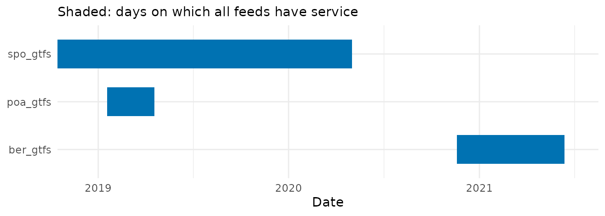

Checking the calendar overlap of GTFS feeds
Source:vignettes/calendar_overlap.Rmd
calendar_overlap.RmdRouting and accessibility analyses often combine several GTFS feeds, such as those of the different transit agencies of a metropolitan region. Routing engines such as r5r and OpenTripPlanner work on a given departure date, which must have service in every feed: otherwise, one of the networks silently drops out of the analysis. Feeds are published at different times and cover different periods, so such a date is not always easy to find.
get_calendar_overlap() returns the periods in which all
the given feeds have service, and how many trips each feed runs on each
day. It is based on the check_gtfs_overlap() function
shared by @higgicd in issue #85.
Finding a date with service in all feeds
Feeds can be given as paths to their .zip files. In this
case, the large shapes and stop_times tables
are not read. With resolution = "periods", the function
returns the periods in which all feeds have service:
spo_path <- system.file("extdata/spo_gtfs.zip", package = "gtfstools")
poa_path <- system.file("extdata/poa_gtfs.zip", package = "gtfstools")
overlap <- get_calendar_overlap(c(spo_path, poa_path), resolution = "periods")
overlap
#> start_date end_date n_days
#> <Date> <Date> <int>
#> 1: 2019-01-18 2019-04-18 91Each row is a period of consecutive days on which all feeds have
service, with its first and last days (both included) and its length.
The São Paulo and Porto Alegre feeds overlap for 91 days, from January
18 to April 18, 2019. Any of these days can be used, but a regular
weekday away from holidays is usually the safest choice, e.g. the first
Wednesday of the period (format(x, "%u") numbers weekdays
from 1, Monday, regardless of the locale):
period_days <- seq(overlap$start_date[1], overlap$end_date[1], by = "day")
departure_date <- period_days[format(period_days, "%u") == "3"][1]
departure_date
#> [1] "2019-01-23"Feeds already read with read_gtfs() (and possibly edited
afterwards) can be given as a list, whose names are used as feed names:
get_calendar_overlap(list(spo = spo_gtfs, poa = poa_gtfs), resolution = "periods").
A feed has service on a day when at least one of its services runs on
it, according to the weekdays and dates in calendar and the
exceptions in calendar_dates. Services not used by any trip
are ignored.
Visualising service periods
When the feeds don’t overlap, the result has no rows:
ber_path <- system.file("extdata/ber_gtfs.zip", package = "gtfstools")
feeds <- c(spo_path, poa_path, ber_path)
get_calendar_overlap(feeds, resolution = "periods")
#> Empty data.table (0 rows and 3 cols): start_date,end_date,n_daysplot = TRUE shows why. It returns a
ggplot2 timeline with one bar per feed, spanning its
service days, and the periods in which all feeds have service shaded in
the background. The result is a regular ggplot object, so
it can be customised with ggplot2 functions, e.g. to zoom
in on a period, since the São Paulo feed spans more than 12 years:
get_calendar_overlap(feeds, resolution = "periods", plot = TRUE) +
coord_cartesian(xlim = as.Date(c("2018-12-01", "2021-07-01")))
The Berlin feed starts in November 2020, after the São Paulo feed ends, so no date has service in all three feeds.
Comparing service levels
The overlap does not guarantee a similar level of service in every
feed: on some days, a feed may run only a few of its trips. The default,
resolution = "daily", returns the number of trips each feed
runs on each of its service days, and whether all feeds have service on
that day:
daily_trips <- get_calendar_overlap(c(spo_path, poa_path))
head(daily_trips[daily_trips$overlap, ])
#> feed date n_trips overlap
#> <char> <Date> <int> <lgcl>
#> 1: spo_gtfs 2019-01-18 7948 TRUE
#> 2: spo_gtfs 2019-01-19 7945 TRUE
#> 3: spo_gtfs 2019-01-20 7945 TRUE
#> 4: spo_gtfs 2019-01-21 7948 TRUE
#> 5: spo_gtfs 2019-01-22 7948 TRUE
#> 6: spo_gtfs 2019-01-23 7948 TRUETrips listed in frequencies count once per departure.
The São Paulo sample feed, for instance, describes all its service this
way. With plot = TRUE, the density of each feed’s trips
over time is plotted in a panel of its own, weighting each day by its
number of trips, which shows when each feed’s service is
concentrated:
get_calendar_overlap(c(spo_path, poa_path), plot = TRUE) +
coord_cartesian(xlim = as.Date(c("2019-01-01", "2019-05-01")))
A good departure date is thus a regular weekday on which every feed runs its usual number of trips.
Once a date is chosen, the feeds can be combined into a single one
with merge_gtfs(), or reduced to the services of that date
with the filtering functions (see the filtering
vignette).